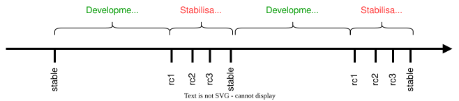
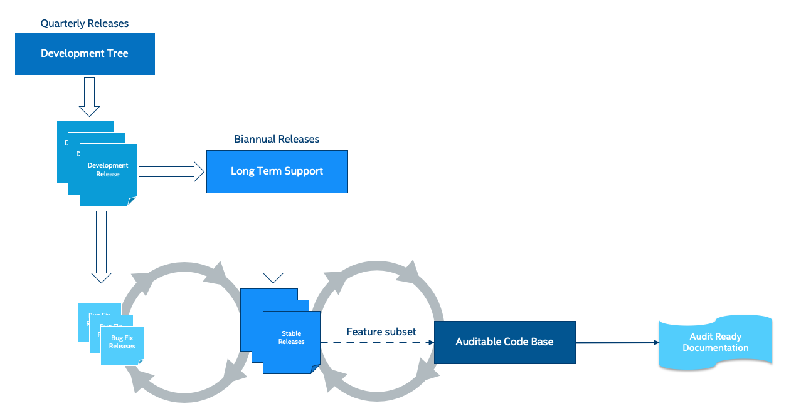

发布流程
Zephyr 项目按基于时间的周期发布版本，而不是由功能驱动。Zephyr 的每个版本汇集了来自社区的众多贡献者、公司和个人的工作成果。
基于时间的发布流程使 Zephyr 项目能够在为用户提供最新技术和功能与保证出色的整体质量之间取得平衡。大约 6 个月的发布周期使项目能够围绕已实际实现的功能协调开发，从而在保持整个版本质量的同时，不会因为一两个尚未就绪的功能而推迟发布。
发布阶段概述
每个发布周期由一个 开发阶段 和随后的 稳定阶段 组成。候选版本（release candidate）会在稳定阶段创建。
在开发阶段，可以合并各种变更，因此这一阶段被称为 main 分支的 合并窗口。在稳定阶段，项目及其维护者专注于修复缺陷和编写版本文档。在此期间，一般不接受新功能。稳定阶段期间，main 分支处于 功能冻结 状态。


当前主版本的里程碑可以在 官方 GitHub Wiki 上找到。以往版本的信息请参见 此处。
备注
每个稳定版本发布后，都会为该版本创建一个新的“发布分支”。
例如，在 Zephyr 稳定版本 v4.4.0 发布后，创建了新分支 v4.4-branch。用于 v4.4.x 补丁版本（v4.4.1、v4.4.2 等）的提交，应以该分支为目标提出。
本页目前没有详细说明补丁版本的发布流程。
合并窗口（开发阶段）
为某个版本打上标签后，发布经理会开放 main 分支，用于下一个发布周期的开发。我们将这段时间称为每个版本的 合并窗口 或 开发阶段。在合并窗口期间，任何符合 PR 合并标准 的代码都可以合并到 main 分支。每个版本的大部分变更都是在其合并窗口期间完成的。
每个版本的合并窗口持续约五个月。
合并窗口结束后，发布团队为即将发布的版本打上第一个 候选版本 标签。此时，main 分支对大多数功能开发关闭，项目进入下一个版本的 功能冻结。功能冻结将在下一节中介绍。
下面是一个合并窗口的时间线示例：
2025 年 11 月 13 日打上 v4.3.0 标签时，合并窗口开放。此时，main 分支开放合并，用于下一个版本 v4.4.0。
2026 年 3 月 24 日打上 v4.4.0-rc1 标签时，v4.4.0 的合并窗口关闭。此时，项目进入 v4.4.0 版本的功能冻结。
功能冻结（稳定阶段）
第一个候选版本打上标签后，该版本的合并窗口即告关闭。这被称为该版本的 功能冻结 或 稳定阶段。在功能冻结期间，除非获得 技术指导委员会（TSC） 批准的例外，否则不会为该版本合并任何新功能。
在稳定阶段，等待新功能 PR 审查时请耐心。
如前所述，在功能冻结期间合并功能的例外流程需要 TSC 批准并给出理由。一般来说，如果你的 PR 尚未合并而功能冻结已经宣布，最好的做法是等待下一个 合并窗口 开放。
如果你认为你的功能值得破例、应在功能冻结期间合并，请联系 TSC。一般联系方式请参见 TSC wiki 页面。
下面是一个功能冻结的时间线示例：
2026 年 3 月 24 日打上 v4.4.0-rc1 标签时，v4.4.0 的功能冻结开始。从那时起，新功能需要获得 TSC 例外批准才能合并到 main 分支。
2026 年 4 月 14 日打上 v4.4.0 标签时，v4.4.0 的功能冻结结束。此时，main 分支再次开放，进入下一个版本的 合并窗口。
以下各节更详细地介绍功能冻结。
允许的变更
功能冻结之后， 只应 接受与稳定相关的变更：
解决功能缺陷的缺陷修复
提高可靠性、构建稳定性或测试行为的稳定性修复
文档更新（澄清、更正、改进）
针对现有功能的测试（不启用新功能）
关于何时接受哪些变更的更多细节，请参见 表格。
对这些允许变更的例外很少见，需要明确的理由并获得 TSC 批准。一般来说，如果某个功能错过了开发阶段窗口，就应等待下一个开发周期。
不允许的变更
功能冻结之后， 不应 接受以下变更：
新功能或功能增强
API 变更，除非是为了解决严重缺陷所必需
与缺陷修复或稳定工作没有直接关联的重构
新的子系统、驱动、开发板或架构变更
功能冻结期间的问题跟踪
在功能冻结期间，建议 在 PR 中引用 GitHub issue，但 不强制要求。
PR 必须 清楚说明：
所解决的问题
问题的影响
该变更如何解决问题
当 PR 的意图或范围不明确时，维护者和发布工程师 可以 要求进一步澄清。
必须使用 issue 的情况
以下情况 必须 有 GitHub issue：
发布阻塞问题（release blocker）
针对已发布分支维护工作的修复
审查与批准
所有 PR 必须 遵循标准的审查和批准流程。
维护者 必须 确保：
变更符合本政策
范围最小，且专注于稳定工作
风险与所处的发布阶段相适应
发布工程师 可以：
根据风险评估拒绝或推迟变更
要求修改或补充理由
风险要求
稳定阶段接受的变更 必须：
范围最小
风险低
经过充分测试
引入重大风险的变更 可能 会被推迟到将来的版本，即使它们属于缺陷修复。
PR 合并标准
以下标准适用于所有发布阶段。

必须满足所有 PR 要求。
至少获得 2 个批准，其中包括指定指派人的批准。
PR 应至少由每个受影响领域的一名维护者或协作者审查；除非对某个领域的变更被认为足够琐碎，这种情况下，获得其他受影响子系统的维护者/协作者的批准即可。
组织层面的四眼原则。我们已经要求至少 2 个批准（基本的四眼原则），但如果提交者与批准者来自同一组织，这类审查和批准可能会无意中带有偏向。为了实现全项目范围的审查和批准，合并标准按以下准则进行了扩展：
对公共和共享代码的修改或新增，应获得来自不同组织的批准（至少有一个批准来自提交者所在组织以外的组织）。公共和共享代码是指不属于
soc、boards和drivers/*/*的任何内容。对硬件支持（驱动、SoC、开发板）的修改或新增，至少应由来自不同组织的人员执行合并。这仅适用于支持特定厂商硬件的 API 实现，不适用于 API 本身。
对于贡献主要来自一个组织、且无法获得其他组织审查的领域，发布工程师可以破例，但合并应由来自不同组织的人员完成。在这种情况下，应严格遵守至少 2 天的最短审查期，以便进行更多审查。
发布工程师不得合并仅由其本组织发起并审查的代码变更。要合并此类变更，至少应有一个审查来自不同组织。
最短审查期为 2 个工作日，琐碎变更为 4 小时（参见 在代码合并前给审查者留出审查时间）。
紧急修复在 CI 通过后可以随时合并，不受上述大部分条件的约束。
所有必需的检查均已通过：
设备树
文档
代码检查工具（Gitlint、Pylint、Ruff、Sphinx 等）
身份/电子邮件
Kconfig
许可证检查
Checkpatch（代码风格）
在模拟/仿真平台上（通过 twister）进行的集成测试
模拟的 Bluetooth 测试
发布质量标准
主要目的是明确制定一个版本发布前必须满足的标准。这有助于以大多数人都能理解的方式定义一个版本何时算“完成”，也有助于新人了解流程并参与打造成功的版本：
发布标准记录了 Zephyr 每个版本的目标受众的所有要求
每个版本的目标受众可能各不相同，也可能有所重叠
任何时候的标准都不是一成不变的：可能有被遗漏的要求，也可能出现新的要求，这种情况下应扩充标准，以确保涵盖所有需求。
以下是每个版本需要满足的高层标准：
没有阻塞缺陷/阻塞问题
所有相关测试都应在
Tier 0平台上通过所有相关测试都应在 Tier 0 和 Tier 1 平台上通过（每种架构/架构变体/硬件特性至少 1 个平台）
所有适用的示例/测试都应能在 Tier 0、1 和 2 平台上构建
所有高危和严重的静态分析问题及安全问题均已处理
发布说明是最新的。
阻塞缺陷
阻塞缺陷流程在发布过程中启动，在功能冻结里程碑之后生效。标记为阻塞问题的 issue 实际上会阻止版本发布。所有阻塞缺陷都应在创建版本之前解决。
被授予 blocker 状态的缺陷，其修复可以一直合并到 'main' 并纳入该版本，直到最终发布日期。
中等及以上严重程度、且影响所有用户的缺陷，通常是升级为阻塞缺陷的候选对象
贡献者和发布工程团队成员在处理发布阻塞缺陷时应遵循以下准则：
只有当软件（Zephyr）绝不能带着该缺陷发布时，才将缺陷标记为阻塞缺陷。
所有协作者都可以添加或移除阻塞标签。
根据缺陷的严重程度和普遍程度，评估其是否可能成为阻塞缺陷。
每次添加或移除阻塞标签时，都要提供详细的理由。
确保所有阻塞问题都标记了里程碑。
阻塞状态由发布经理最终决定；如有任何疑问，请联系他们。
发布里程碑
下表记录了与每个版本相关的里程碑。
长期支持（LTS）版本
长期支持版本旨在获得较长时间的支持和维护，是推荐用于产品的版本，也是用于认证的可审计分支。
LTS 版本的定义如下：
面向产品
延长的稳定期：留出更多时间进行测试和缺陷修复
稳定的 API
质量驱动的流程
长期：在较长时间内（至少 5 年）持续维护。
面向产品
Zephyr LTS 是推荐给产品制造商使用的版本，提供延长的支持和维护，包括常规的稳定性修复、缺陷修复和安全修复。
LTS 既包含成熟的功能，也包含新功能。API 和功能的成熟度会被记录和跟踪。随着从一个 LTS 过渡到下一个 LTS，成熟稳定 API 的覆盖面和范围会不断扩大，使用户既能使用最前沿的功能和新硬件，又能拥有一个随时间演进的稳定基础。
延长的稳定期
Zephyr LTS 的开发周期与常规版本不同，它有一个延长的稳定期。常规版本的功能冻结发生在计划发布日期前 3-4 周。LTS 的稳定期延长 3 周，功能冻结发生在预期发布日期前 6-7 周。在这种情况下，代码冻结到发布日期之间的时间会延长。
稳定的 API
Zephyr LTS 为产品开发提供了一个稳定且长期可用的基础。为保证 API 及其实现的稳定性，要求构成操作系统核心的所有发布软件都已经历 Zephyr API 生命周期，并至少在 2 个版本中保持稳定。这保证了我们发布的许多重点功能和核心功能都具有成熟可靠的实现和稳定的 API，并在 LTS 版本的整个生命周期内获得支持。
API 冻结（LTS - 2）
所有稳定 API 都需要在 LTS 之前 2 个版本冻结。API 可以通过新增功能进行扩展，但不修改核心实现。这适用于以下子系统，例如：
设备驱动（i2c.h、spi.h）……
内核（k_*）：
操作系统服务（日志、调试等）
DTS：API 和绑定的稳定性
Kconfig
只要实验性功能的新 API 是独立的，并被记录为实验性或不稳定的功能/API，就可以随时添加。
功能冻结（LTS - 1）：不得有新功能，也不得对涵盖主要 LTS 功能的代码进行大规模改造或重构。
内核 + 基础操作系统
其他已宣传的 LTS 功能
构建在基础操作系统和已宣传的 LTS 功能之上和/或对其进行扩展的辅助功能可以随时添加，并在适用时标记为实验性
质量驱动的流程
Zephyr 项目遵循行业标准和流程，目标是提供以质量为导向的版本。为此，项目提供以下产出物，用于跟踪项目所提供软件组件的进展、完整性和质量：
遵守已发布的编码准则、风格指南和命名约定，并记录偏差。
静态分析报告
使用现有的商业和开源工具定期对整个代码树进行静态分析，并记录偏差和误报。
已记录文档的组件和 API
需求目录
验证计划
验证报告
覆盖率报告
需求追溯矩阵（RTM）
SPDX 许可证报告
每个版本都会附带上述产出物，用于记录软件在发布时的质量和状态。
长期支持与维护
LTS 版本每 2.5 到 3 年发布一次，并从主代码树中创建分支，在发布后独立维护约 5 年。
支持分为三个主要阶段：
第 1 阶段（前 2 年）： 一般缺陷修复和安全修复，包括平台和驱动修复。
第 2 阶段（之后 3 年以上）： 仅提供安全修复和操作系统稳定性修复。
第 3 阶段： 可能通过第三方提供延长支持（细节待定）。
对某个 LTS 版本（LTS N）的支持将持续到其后第二个 LTS 版本（LTS N+2）首次发布为止。LTS N 的最终版本会在 LTS N+2 首次发布后不久发布。
当前受支持的 LTS 版本及其停止支持（EOL）日期列表请参见 此处。
gitGraph
commit id: "3.5"
commit id: "3.6"
commit id: "3.7"
branch "LTS"
checkout "LTS"
commit id: "3.7.1"
commit id: "3.7.2"
checkout main
commit id: "4.0"
commit id: "4.1"
变更和修复在两个方向上流动。但是，从 main 分支到 LTS 分支的变更将仅限于同时适用于两个分支、且只针对现有功能的修复。
LTS 分支的所有修复如果适用于主线代码树，也应提交到主线代码树。
可审计代码库
可审计代码库将基于 Zephyr 操作系统功能的一个明确子集建立，其范围有限。创建审计分支后，LTS、开发代码树和可审计代码库应保持同步，但向用于认证的审计分支中添加新功能时，会采用更严格的流程。
新功能进入可审计代码库之前，将应用该流程。
初始及后续的认证目标将由 Zephyr 项目理事会决定。
实现所选认证的流程将由信息安全工作组和功能安全工作组确定，并与 TSC 协调。
主机工具支持政策
本节记录与开发 zephyr 应用程序所需的主机工具相关的政策。
Python 版本政策
Zephyr 在确定其支持的最低 Python 版本时，会参照 Python upstream release schedule。
所选的最低支持版本旨在兼顾长期支持与在主流、仍受积极支持的 Linux 发行版（例如当前的 Ubuntu LTS 和 Debian Stable 版本）中的实际可用性。
满足以下条件时，会考虑移除对某个 Python 版本的支持：
该版本即将或已经到达上游的停止支持（EOL）日期，并且
在当前仍受积极支持的主要 Linux 发行版中已普遍提供更新的 Python 版本。
硬件支持等级
本节记录与硬件平台相关的一套大致等级划分。这些标准目前并未在开发板、架构或 SoC 层面正式执行或评估。
Tier 0：仿真平台
测试会在 CI 中针对这些平台进行构建和运行，因此运行时失败可能会阻塞 PR。
由 Zephyr 项目本身提供支持，承诺在版本中修复缺陷。
每个新架构都需要一个 Tier 0 平台。
针对该等级平台报告的缺陷，应作为 Zephyr 的一般缺陷进行评估和处理，并以最高优先级处理。
Tier 1：受支持平台
由特定团队承诺使用开源且公开可用的驱动，定期通过 twister 设备测试运行“Zephyr 兼容性测试套件”（细节待定）。
承诺及时修复缺陷以赶上版本发布。不由“Zephyr 项目”本身提供支持。
可公开购买
针对该等级平台报告的缺陷，应作为 Zephyr 的一般缺陷进行评估和处理，并以中到高优先级处理。
Tier 2：社区平台
平台实现已在上游提供，但没有测试承诺，也可能无法公开购买。
有一名专门的维护者，承诺回应问题、审查补丁。
针对该等级平台报告的缺陷 不 被视为 Zephyr 的一般缺陷。
Tier 3：已弃用和不受支持的平台
平台实现已提供，但没有所有者，或所有者没有响应。
不承诺提供支持。
如果没有人努力将其提升到 Tier 2 或更高等级，可能会从上游移除。
针对该等级平台报告的缺陷 不 被视为 Zephyr 的一般缺陷。
发布程序
本节记录发布经理的职责，作为发布经理的知识库。
发布检查清单
每个版本都关联一个 GitHub issue，其中包含完整的检查清单。一个版本完成后，会为下一个版本创建检查清单。
打标签
Git 中的版本和标签应使用以下语法：
版本 [Major].[Minor].[Patch Level]
候选版本 [Major].[Minor].[Patch Level]-rc[RC Number]
标签：
v[Major].[Minor].[Patch Level]-rc[RC Number]
v[Major].[Minor].[Patch Level]
v[Major].[Minor].99：打在 main 分支上的标签，表示 v[Major].[Minor+1] 的工作已经开始。例如，v1.7.99 会在 v1.8 流程开始时打上。该标签与为开发中的 main 分支版本所定义的 VERSION_MAJOR/VERSION_MINOR/PATCHLEVEL 宏相对应。有了这个标签，在 main 分支上执行 "git describe" 就能生成合理的输出，这通常用于自动化构建和 CI 工具。


最终版本和每个候选版本都应按以下步骤打标签：
备注
打标签需要通过显式的 git 命令完成，而不是通过 GitHub 的发布界面。GitHub 的发布界面不会生成附注标签（annotated tag），无论是正式版本还是预发布版本，它生成的都是“轻量”标签。由于下面的步骤涉及创建签名标签，你还应将你的 gpg 公钥上传到你的 GitHub 账户。如果你没有 gpg 密钥，也可以使用 ssh 密钥进行签名。
备注
本节以打 1.11.0-rc1 标签为例，请替换为相应的候选版本号。
更新位于 Git 仓库根目录下的 VERSION 文件中的版本变量，使其与该候选版本的版本号一致。
EXTRAVERSION变量用于标识该候选版本的 rc[RC Number] 值:EXTRAVERSION = rc1
以
release: Zephyr 1.11.0-rc1作为提交标题，提交一个包含更新后的 VERSION 文件的 PR。CI 成功后合并该 PR。使用附注标签为该版本打标签并推送:
$ git pull $ git tag -s -m "Zephyr 1.11.0-rc1" v1.11.0-rc1
验证标签是否已正确签名，对该标签执行
git show的输出中必须包含签名（在输出中查找BEGIN PGP SIGNATURE或BEGIN SSH SIGNATURE标记）:$ git show v1.11.0-rc1
推送标签:
$ git push git@github.com:zephyrproject-rtos/zephyr.git v1.11.0-rc1
向邮件列表（
announce和devel）发送一封附有版本链接的电子邮件
备注
本节以打 1.11.0 标签为例，请替换为相应的最终版本号。
当所有最终版本标准均已满足，且最终发布说明已获批准并合并到仓库后，将按以下步骤设置最终版本号并为仓库打标签：
更新位于 Git 仓库根目录下的 VERSION 文件中的版本变量。将
EXTRAVERSION变量设为空字符串，表示这是最终版本:EXTRAVERSION =
以
release: Zephyr 1.11.0作为提交标题，提交一个包含更新后的 VERSION 文件的 PR。CI 成功后合并该 PR。使用两个附注标签为该版本打标签并推送:
$ git pull $ git tag -s -m "Zephyr 1.11.0" v1.11.0
验证标签是否已正确签名，对该标签执行
git show的输出中必须包含签名（在输出中查找BEGIN PGP SIGNATURE或BEGIN SSH SIGNATURE标记）:$ git show v1.11.0
推送标签:
$ git push git@github.com:zephyrproject-rtos/zephyr.git v1.11.0
在 releases 页面顶部找到新的
v1.11.0标签，使用Edit tag按钮编辑该版本，内容如下：将
docs/releases/release-notes-1.11.rst中的概述复制到发布说明文本框中，并链接到 docs.zephyrproject.org 上完整的发布说明文件。
向邮件列表（
announce和devel）发送一封附有版本链接的电子邮件